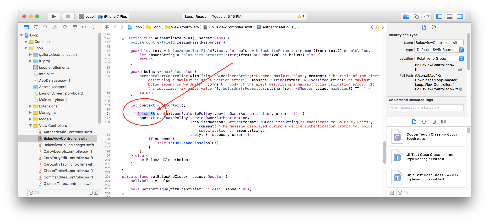
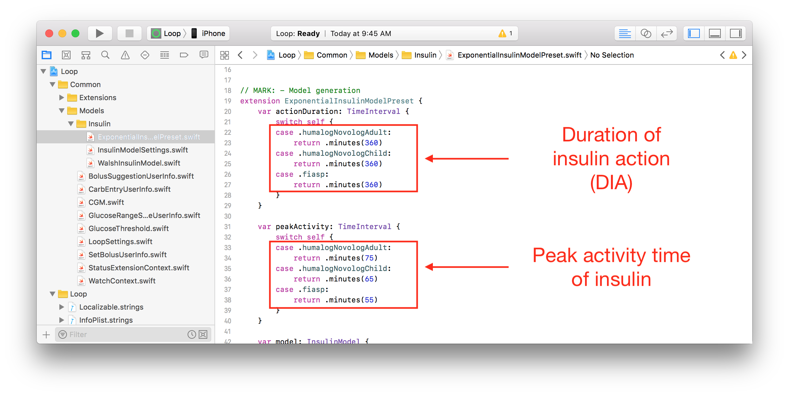
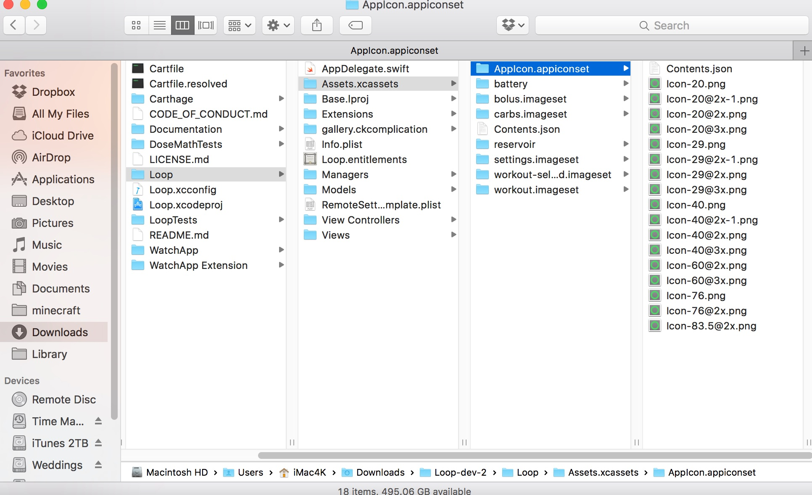
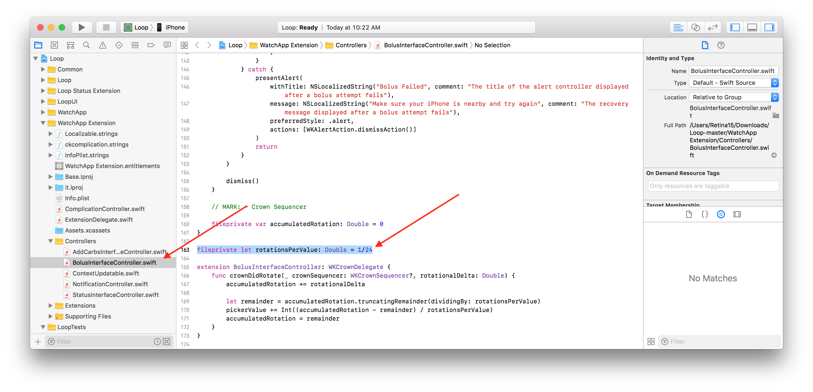

Code Customizations⌁
Based on Loop users’ experience, there are some customizations that you may want to incorporate ahead of building your Loop app and Apple Watch app. These customizations must be done prior to building the Loop app onto your iPhone, they cannot be done from within the app itself.
Note: Every effort will be made to update the line numbers as the code is updated, but there may be times where the screenshots and line numbers are slightly different than the current version of Loop code.
Disable TouchID for Bolus⌁
If you have TouchID enabled as part of your iPhone security (thumbprint), you will have to confirm each bolus with a thumbprint as part of standard Loop build. If you would like to disable the TouchID for bolusing (but still keep TouchID for the rest of your normal iPhone use), you can do that by modifying Line 191 in the Loop>>View Controllers>>BolusViewController.swift. Add the false && as shown in the screenshot below:

Workout Range Duration⌁
 If you’d like more than just the standard 1 or 2 hour duration for the Workout Range, you can add or modify the code to add another time interval or edit the existing ones.
If you’d like more than just the standard 1 or 2 hour duration for the Workout Range, you can add or modify the code to add another time interval or edit the existing ones.
Go to the Loop>>Extensions>>UIAlertController.swift and modify Line 30. The default has 1 and 2 hours as shown where the arrow is pointing in the screenshot. You can edit those to whatever duration you want (in units of hours) and add a duration if you prefer. If you’d like 1, 2, and 3 hours options...simply edit the numbers in the brackets to read [1, 2, 3]. It is possible to enter less than 1 hour intervals such as 15min, 30 min, 45 min by editing the brackets to read [0.25, 0.5, 0.75].

Default Carb Absorption Times⌁

Loop’s default carb absorption times are based on the high, medium, and low glycemic index absorption curves presented in Think Like A Pancreas by Gary Scheiner. Currently the lollipop icon is set for 2 hours, taco icon for 3 hours, and pizza icon for 4 hours.
You can modify these defaults to suit your needs, however modification of these values it not as helpful/common as previous Loop versions. Ever since Loop v1.4, Loop has included dynamic carb absorption means that Loop will start with your entered carb absoprtion time, mutliply it by 1.5, and then dynamically adjust the absorption time (either shorter or longer) based on the observed BG impacts. So, typically, most people are finding that modification of the default carb absorption times is no longer necessary.
If you would like to modify those defaults, you can do so in the Loop>>Managers>>LoopDataManager.swift Lines 63-65. Note the times are in hours, not minutes, in the code.

Exponential Insulin Curve⌁
The Exponential Insulin Curve Models (Rapid-Acting Adult, Rapid-Acting Child, and Fiasp) are defaulted to an insulin duration of 360 minutes...but the peak activity of the various curves differs:
- Rapid-acting adult curve peaks at 75 minutes
- Rapid-acting child curve peaks at 65 minutes
- Fiasp peaks curve peaks at 55 minutes
If you wish to customize these values, you can adjust them on Lines 20-38 in the Loop>>Models>>Insulin>>ExponentialInsulinModelPreset.swift file

Loop Logo⌁
If you want an app logo other than the default green circle for your Loop app, you can easily customize this. To make it easy to generate the correct sizes of icons, you can use a site like appicon.build and just drag and drop your source image. The source image needs to be 1024 pixels x 1024 pixels. The site will email you a zip file. Double click the zip file, choose the “ios” folder, and copy the contents of the Appicon.appiconset as shown highlighted below.

Now navigate to the corresponding Loop folder as shown below. Replace the contents of the Appicon.appiconset with your copied images.

You can confirm the successful change by looking in Xcode. You should see your custom logo in the Appicon set now. You will also likely see a yellow alert that there are “5 unassigned children”. This alert will not prevent your app from building, it’s simply because the zipfile contained more sizes of images than Loop app uses. You can just leave the unassigned images as is.

Loop Graph hours⌁
If you want the Loop’s graphs to display different time length than the default, you will go to the StatusTableViewController.swift line 157. This code keeps track of how many hours to display in total and how far into the future to display on your graphs. For total hours it does a calculation based upon your screen size and how granular to display between each segment. For how far forward to display, it currently uses your Insulin Action Duration setting to determine this (and if that number is missing for some reason it defaults to 4 hours).
Please note, using this will make it more difficult to see changes in other charts on your screen (like length of temp basal).

Here are a couple of ways you could modify line 157 based on your specific wants:
Want double the amount of total hours shown?
let historyHours = (totalHours * 2) - (dataManager.insulinActionDuration ?? TimeInterval(hours: 4)).hours
Want 1/2 of my Insulin Action Duration to show in the future?
let historyHours = totalHours - ((dataManager.insulinActionDuration / 2) ?? TimeInterval(hours: 4)).hours
Want 2.5 x the total time and only 2 hours forward within that?
let historyHours = (totalHours * 2.5) - (TimeInterval(hours: 2)).hours
Apple Watch Customizations⌁
Recommended Bolus Autofill⌁
The Apple Watch's default is to autofill to 75% of the recommended bolus. If you wish, you can customize so that the watch autofills a different percentage. To do this, the multiplier can be changed from 0.75 to a value of your choice. A value of 1 will autofill 100% of the recommended bolus. A value of 0 will autofill 0% of the recommended bolus. Go to the Watchapp Extension>>Controllers>>BolusInterfaceController.swift. Edit the section of line 97 for your customization.

Adjust sensitivity of digital crown for carb and bolus entry⌁
The rate of change of the carb and bolus entry pickers when using the digital crown can be altered. You'll need to edit two lines in files within the WatchApp Extension>>Controllers folder. In AddCarbsInterfaceController.swift edit line 130, and in BolusInterfaceController.swift edit line 161. The 1/24 value is the ratio of rotations of the crown to the amount of change in the value. Changing it to 1/12 would mean that twice as many turns would be needed for the same amount of carb or bolus entry.

